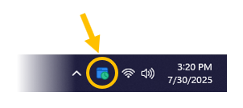
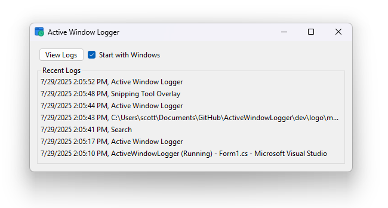
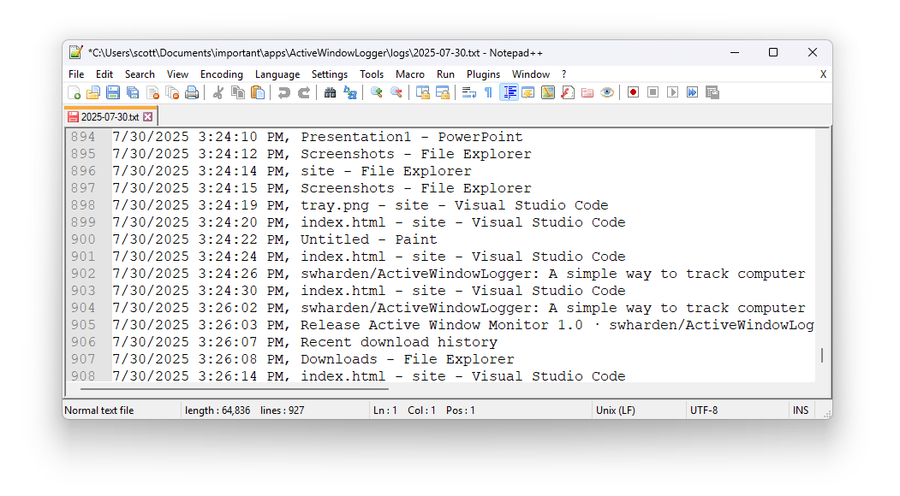

Active Window Logger is a Windows Application that lives in the system tray and monitors computer activity based on active window name. Unlike similar projects, this app aims to be as simple as possible to facilitate customization and minimize risk it will be flagged as malware. It inspects window titles and tracks mouse movement to evaluate activity, but key presses are never tracked.


